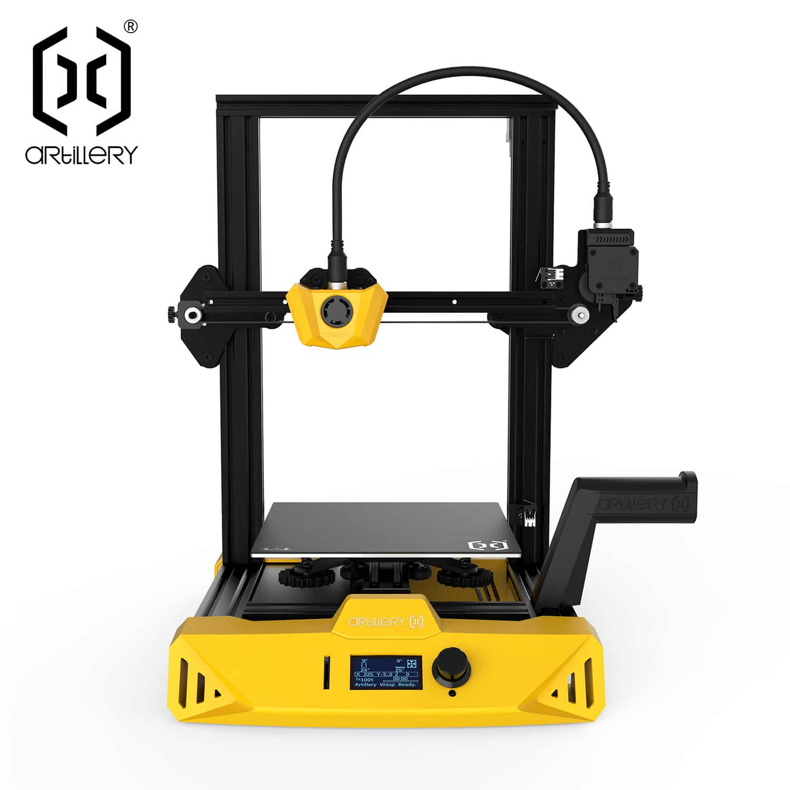
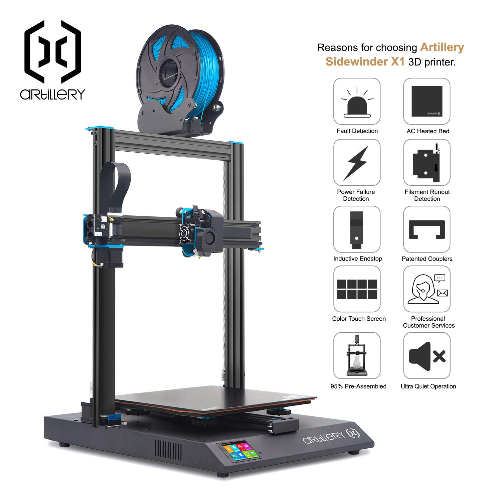
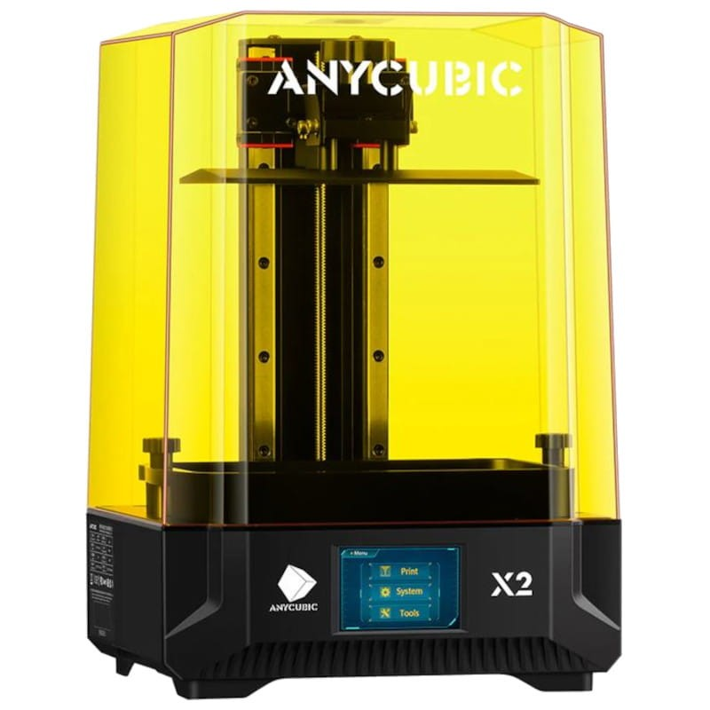
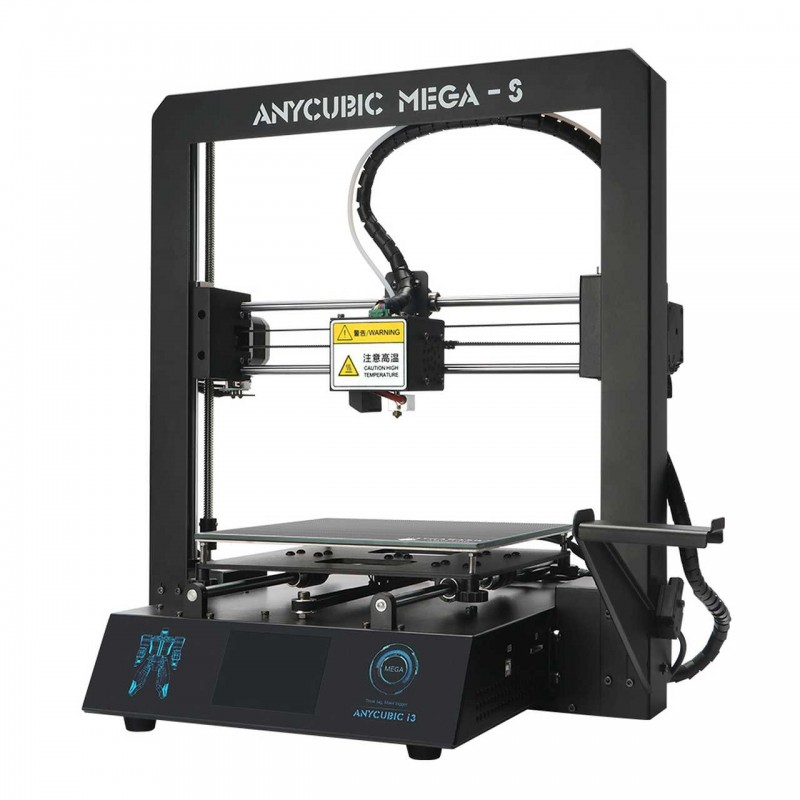

| Artillery |
|

Artillery HornetPrecio: €200.05 La nueva impresora 3D Artillery Hornet, es una impresora 3D de estilo cartesiano todo en uno. La impresora Artillery Hornet es ultra silenciosa y tiene controladores 32bits paso a paso, tiene un extrusor tipo bowden, nozzle 0.4mm compatible E3D V6, eje Z doble, cama calefactada de corriente CA y pantalla táctil TFT.

Artillery Sidewinder X1Precio: €435 Artillery Sidewinder X1 es una impresora 3D con mayúsculas, ofrece una calidad de impresión difícil de superar. Su sistema de extrusión directa y su gran versatilidad le permiten imprimir muy bien con una amplia gama de materiales, incluido flexibles, donde supera a la mayoría. Destaca por su sigilosa impresión y rapidez, tanto en velocidad de impresión, que es realmente alta, como en la velocidad de calentamiento de la cama. Esta impresora 3D Artillery tiene de detector de falta de filamento, pausa y reanudación de impresión tras un corte de corriente. |
| AnyCubic |
|

Anycubic Photon Mono X2Precio: €600.99 La Anycubic Photon Mono X2 es una impresora 3D de resina LCD que destaca por su pantalla monocromática 4K de 6.6 pulgadas, la cual permite imprimir modelos con una increíble precisión y detalles finos. Esta impresora está diseñada tanto para profesionales como para aficionados avanzados que buscan resultados de alta calidad en sus proyectos de impresión 3D.

Anycubic i3 Mega SPrecio: €812 La Anycubic i3 Mega S es una impresora 3D FDM robusta y fácil de usar, ideal para principiantes y usuarios avanzados. Con una estructura metálica sólida y varias características que facilitan la experiencia de impresión, la i3 Mega S es conocida por su fiabilidad y calidad de impresión. |
| Creality |
| Prusa Research |
Obtener los datos de todas las impresoras, mostrar el primer programa utilizado por cada una y dividirlas en tablas según su tipo ordenándolas por precio de mayor a menor.
Impresoras FDM
| Impresora | Modelo | Precio | Programa |
|---|---|---|---|
| Anycubic i3 Mega S | i3 Mega S | 812€ | No ha sido utilizada |
| Prusa Research Prusa i3 MK3S+ | i3 MK3S+ | 750.20€ | Simplify3D |
| Artillery Sidewinder X1 | Sidewinder X1 | 435€ | PrusaSlicer |
| Creality Ender 3 V2 | Ender 3 V2 | 220€ | PrusaSlicer |
| Artillery Hornet | Hornet | 200.05€ | Cura |
Impresoras SLA
| Impresora | Modelo | Precio | Programa |
|---|---|---|---|
| Anycubic Photon Mono X2 | Mono X2 | 600.99€ | Cura |
| Prusa Research SL1 | SL1 | 523.67€ | PrusaSlicer |
| Creality LD-002H | LD-002H | 215.50€ | Simplify3D |